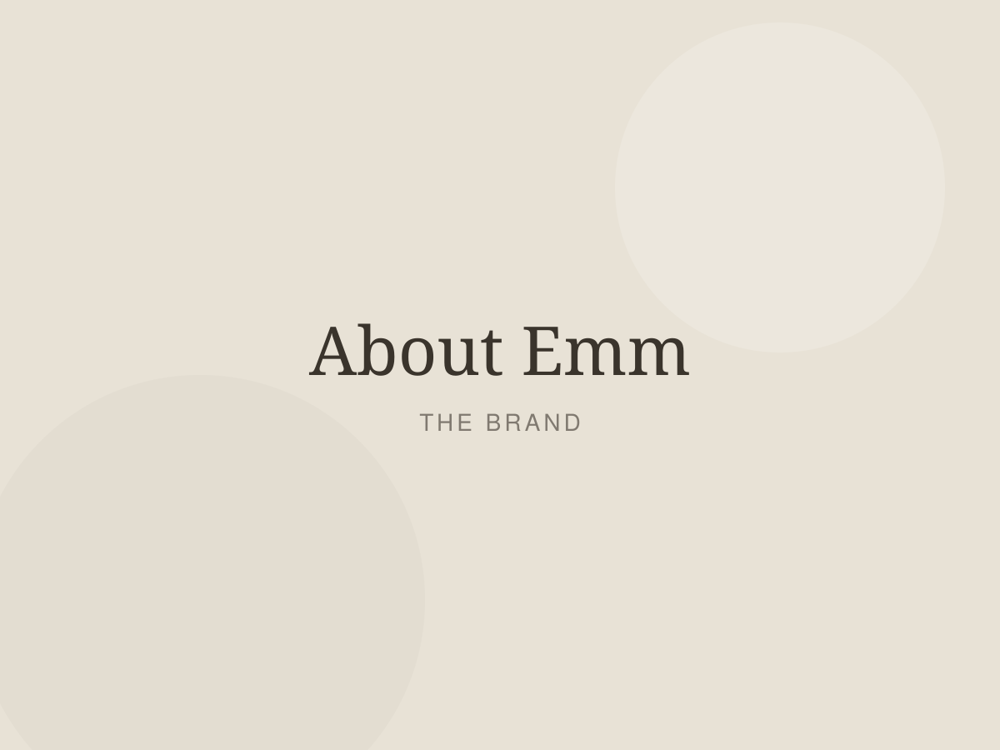

Every person is living through a different chapter.
ChapterByEmm was created around that one idea — and our T-shirts are designed to express those moments, printed on cotton you'll actually want to wear every day.

It began with one tee and one hard year
I made the first ChapterByEmm shirt for myself. I was in the middle of a chapter I hadn't planned for, and I wanted to wear something that said it out loud without saying too much. So I set four words in a soft serif, printed them on a cream cotton tee, and wore it until the collar went soft.
Friends asked where it was from. Then their friends asked. That's genuinely how this started — one shirt at a time, printed on a small press, packed at my kitchen table.
What we believe
Clothes aren't just clothes. The tee you reach for on a hard morning does something small and real for you. That's why every design starts with a feeling rather than a trend, and why we keep the wording gentle enough to still feel true a year from now.
How each tee is made
We print to order in small batches, so nothing sits in a warehouse and nothing goes to landfill. Every blank is combed ring-spun or organic cotton that I've worn and washed myself before it goes into the shop. Prints are pressed with water-based inks that sink into the fabric rather than sitting on top, then each tee is checked, folded and packed in recyclable tissue by hand.
— Emm, founder & designer

What you can count on
Real garments, made to last
Every order is a physical printed T-shirt on 160–230 gsm cotton — never a transfer that peels after three washes.
Made in small batches
Printed to order in our own studio, which keeps waste low and quality high. Nothing mass-produced.
Honest sizing
Real body measurements on every product page, and a human who'll answer your sizing email the same day.
Care after checkout
Tracking on every parcel, 30-day exchanges, and a free reprint if anything arrives less than perfect.
Which chapter are you in?
Browse the collections, or tell us your words and we'll print them for you.